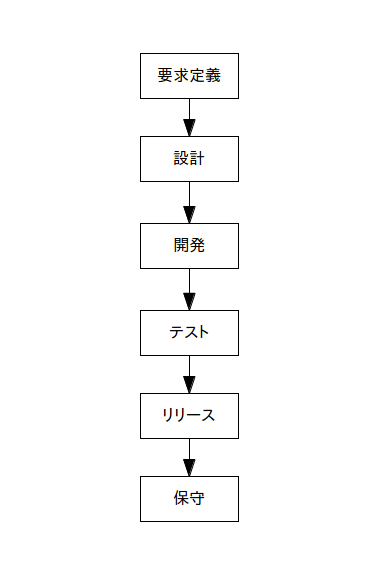

ウォーターフォール型開発
1. 概要
英語でウォーターフォール(waterfall)は「滝」という意味で、 既に知ってる人も多いと思いますが、ウォーターフォール型ソフトウェア開発は 各工程を滝のように「要求定義」「設計」「開発」「テスト」「保守」などに分割し、 トップダウンで各工程を実行していく開発手法です。
原則として各工程が終わるまでは次の工程に進むことは出来ません。
古典的な手法で問題も多いのですが、とてもシンプルで分かりやすいので良く使われています。
ウォーターフォールの特徴・原則：
・ 工程を「要求定義」「設計」「開発」「テスト」「保守」などに分割する
・ 各工程が終わるまでは次の工程に進めない
・ シンプルなので良く使われている
2. 開発の流れ(プロセス)
色んな流儀がありますが、ウォーターフォールの基本的なモデルは下の図です。

この図以上に特に説明することは無いのですが、原則に書いたように
各工程は一方通行で前の工程に戻ることは出来ません
。ただ実際にはそんな理想的な事は無理なので戻る事も多いです。
なおウォーターフォールに限らずソフトウェア開発ではスケジュール管理が大事ですが、 ウォーターフォールでは WBS が良く使われています。